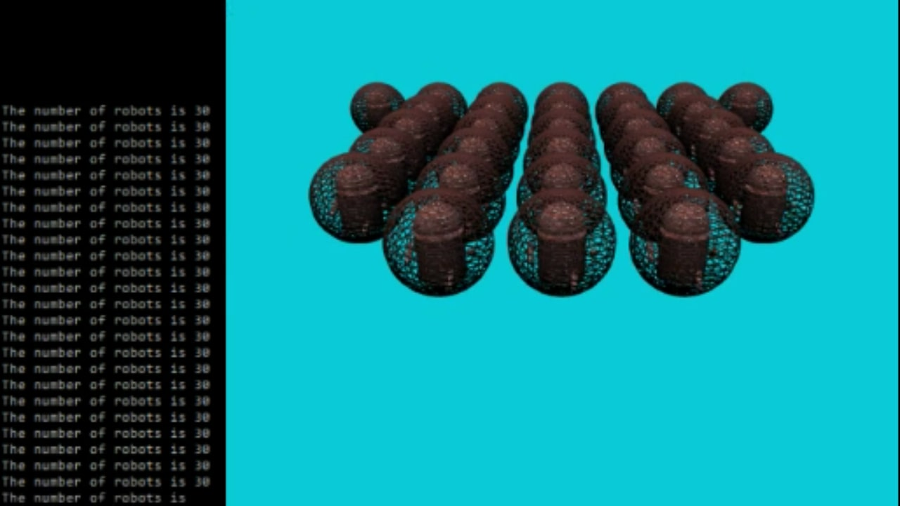
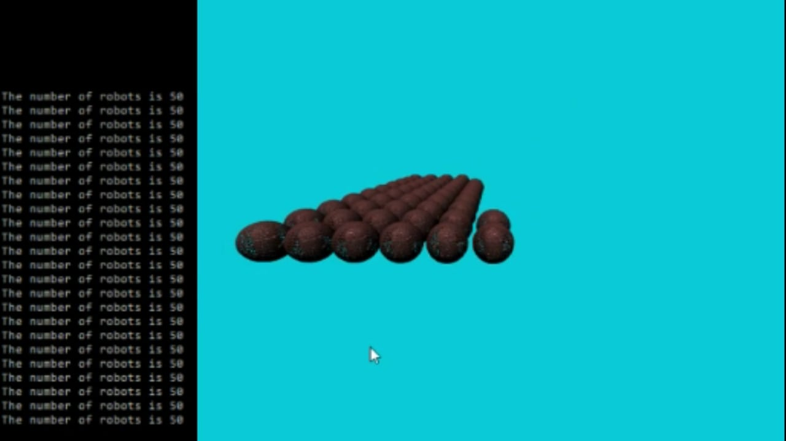
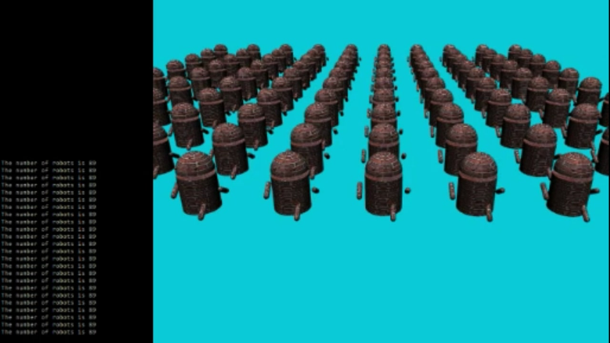

Textures, Scene Graphs and Culling
C++ OpenGLThis project was the third solo assignment for UCSD's Introduction to Computer Graphics class. It involved implementing a scene graph to render an array of textured models, modifying transformation matrices to create an animation for the models, and implementing view frustum culling.



Goals for this Project:
Project Rubric and Directions- Load an image and create a textured 3D object.
- Implement a scene graph to render a robot object. The scene graph must consist of at least three nodes: Node, Transform, and Geometry.
- Animate the robot to make it look like it is walking.
- Use the scene graph to construct a 2D grid of multiple robots.
- Create a bounding sphere around each robot and implement view frustum culling. Display the number of robots rendered.
Keyboard Controls:
- c: Turn frustum culling on/off
- f: Freeze/unfreeze the previous culling
- n: Switch between normal coloring and the Phong illumination model
- s: Turn bounding sphere rendering on/off
- Up Arrow: Decrease the FOV (zoom in)
- Down Arrow: Increase the FOV (zoom out)
Mouse Controls:
- Hold the left mouse button and move the cursor to rotate the camera in place.
- Hold the right mouse button and move the cursor to rotate the camera around the center of the world.